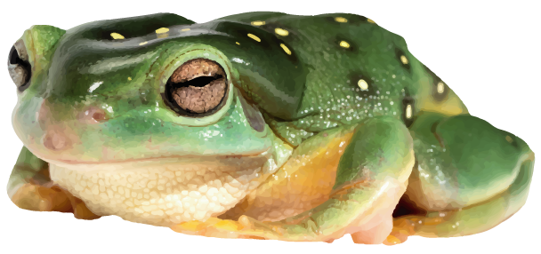
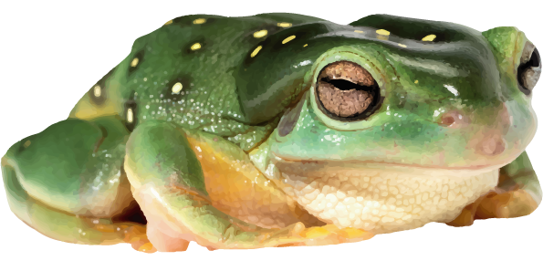
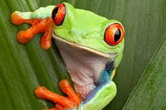

|  | 🐸 I N F O 🐸(learn about the frogs) |
 |
Key Information
Common frogs have smooth skin that varies in colour from grey, olive green and yellow to brown. They have irregular dark blotches, a dark stripe around their eyes and eardrum, and dark bars on their legs. They are able to lighten or darken their skin to match their surroundings.
This species is widespread in mainland Britain. Common frogs are most active at night, and hibernate during the winter in pond mud or under piles of rotting leaves, logs or stones. They can breathe through their skin as well as their lungs. They can emerge to forage during warm spells in the south west of the country.
In spring males croak to attract females. The male embraces a female and fertilises her eggs as she lays them in shallow, still water – frogspawn is a familiar sight. Tadpoles hatch, and over about 16 weeks gradually change into froglets: a process known as metamorphosis.
What do frogs eat?
Adult frogs eat insects that they catch with their long, sticky tongue, and other invertebrates such as snails, slugs and worms.
What do tadpoles eat?
Young tadpoles feed on algae, but then become carnivorous.
Where to find them.
You can find frogs in their natural habitats, by ponds, in meadow areas and sometimes woodland areas. They can also appear by lakes and canals. Mmm, tasty water areas. I'm running out of content to put on this thing.